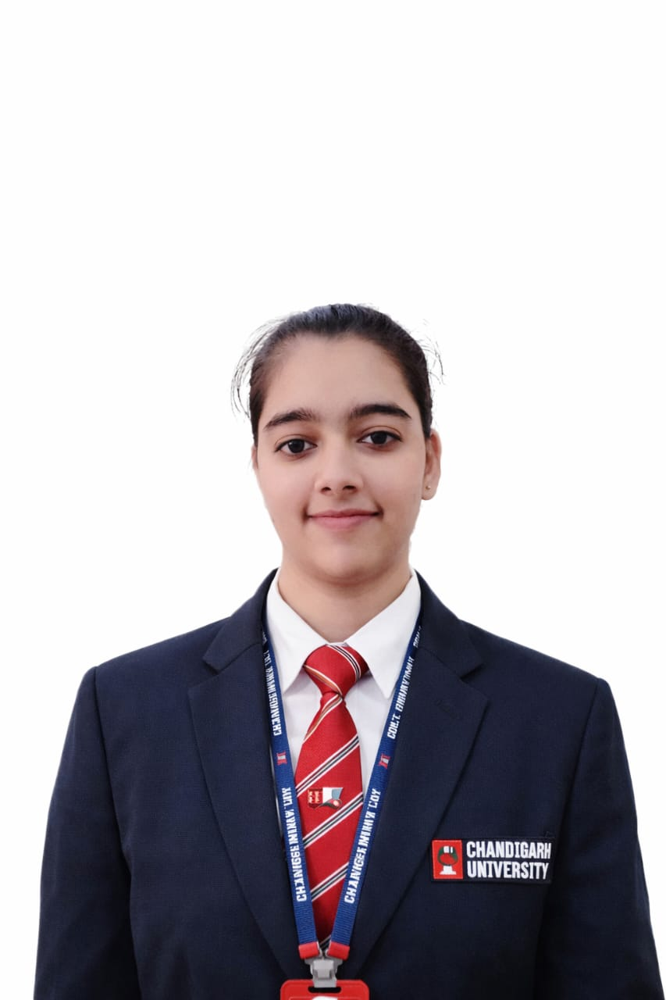

Vidisha Kamboj
kambojvidisha7@gmail.com | +91 9084797627 |
LinkedIn | GitHub

Full Name: Vidisha Kamboj
Mobile: +91 9084797627
Email: kambojvidisha7@gmail.com
Address: Saharanpur, Uttar Pradesh
Social Links
- LinkedIn: https://www.linkedin.com/in/vidisha-kamboj-2b9367322/
- GitHub: https://github.com/vidishakamboj/
- LeetCode: https://leetcode.com/u/vidishakamboj/
- Instagram: https://www.instagram.com/_vidisha_kamboj_
Professional Summary
A highly motivated and aspiring Computer Science Engineering student with a strong
passion to leverage technology to enhance security, automation, and efficiency.
Educational Qualifications
- B.E: Chandigarh University (2024–2028)
- 12th: Saharanpur Public School (2023–2024)
- JEE / Equivalent: 69.9 Percentile
- 10th: Saharanpur Public School (2021–2022)
Skills
Technical Skills
Soft Skills
- Problem Solving
- Teamwork
- Communication
Projects
Water Level Detector System
Designed a system to monitor water levels and prevent overflow.
Publish Research Paper
Sorting Algorithm Comparison in Big Data and ETL Applications.
Achievements
- Participated in Smart India Hackathon (SIH)
- Completed online programming certifications
- Black Belt in Taekwondo and won 2 bronze medals
- First Prize in drawing competition
Languages Known
Hobbies
- Travelling
- Problem Solving
Extra Section
Actively learning cybersecurity tools and participating in technical communities.